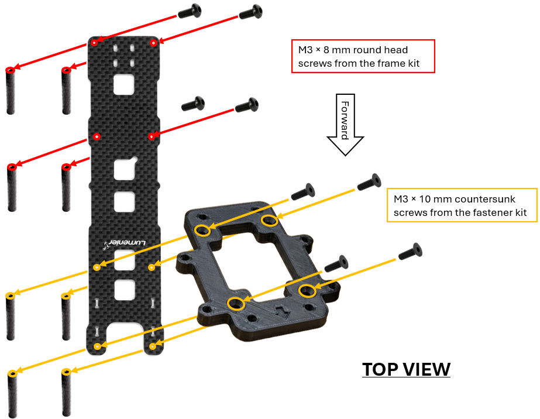
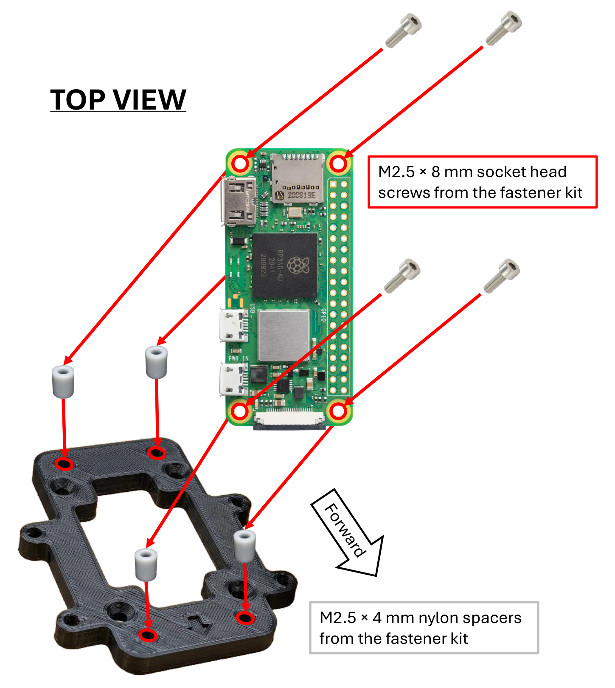
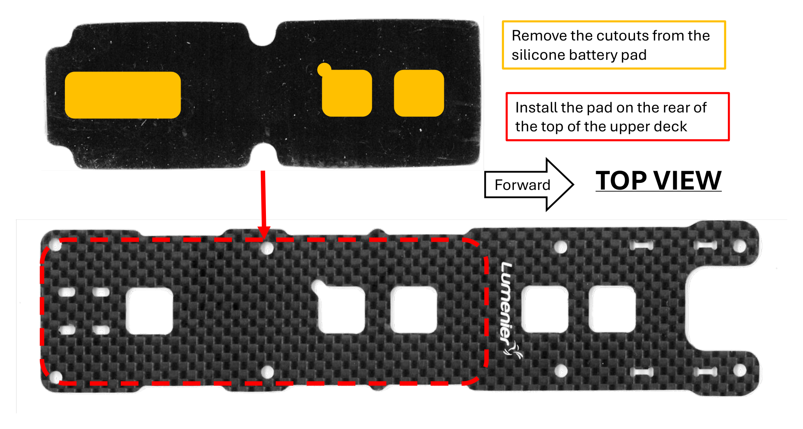

Task 8: Set up the upper deck
Install the frame standoffs, Raspberry Pi mount, Raspberry Pi, and battery pad on the upper deck.
Parts required
- Upper deck
- Eight frame standoffs from the frame kit
- Four M3 × 8 mm round-head screws from the frame kit
- Four M3 × 10 mm countersunk screws from the Raspberry Pi subkit
- Raspberry Pi mount
- Prepared Raspberry Pi
- Four M2.5 × 4 mm nylon spacers
- Four M2.5 × 8 mm socket-head screws
- Battery pad
Tools required
- 2.0 mm Allen key
Step 1. Install the frame standoffs and Raspberry Pi mount
- Install the rear four frame standoffs on the upper deck with the M3 × 8 mm round-head screws from the frame kit, as shown in Fig. 8a.
- Install the front four frame standoffs with the M3 × 10 mm countersunk screws from the Raspberry Pi subkit.
- Use those front countersunk screws to secure the Raspberry Pi mount to the upper deck.
- The printed arrow on the Raspberry Pi mount must face up and point forward.
Frame-kit screw order.
The four small screw bags in the frame kit are arranged in ascending length: M3 × 8, M3 × 12, M3 × 14, and M3 × 30. Use the shortest bag for this step.
The four small screw bags in the frame kit are arranged in ascending length: M3 × 8, M3 × 12, M3 × 14, and M3 × 30. Use the shortest bag for this step.

Fig. 8a. Install the frame standoffs and Raspberry Pi mount on the upper deck.
Step 2. Install the Raspberry Pi
- Place one nylon spacer on each of the four heat inserts shown in Fig. 8b.
- Place the Raspberry Pi on the spacers. The black camera retainer must face forward.
- Install the M2.5 × 8 mm socket-head screws and tighten them in a crisscross pattern with the 2.0 mm Allen key.

Fig. 8b. Install the Raspberry Pi on the Raspberry Pi mount.
Step 3. Install the battery pad
- Remove the silicone battery pad from the frame kit.
- Punch out the two square cutouts and the one rectangular cutout.
- Peel the adhesive backing.
- Align the cutouts with the matching cutouts in the upper deck.
- Press the pad onto the side with the Lumenier marking and smooth it down fully.

Fig. 8c. Remove the cutouts and install the battery pad on the upper deck.
Common errors
- Installing the Raspberry Pi mount backward so the arrow does not point forward.
- Omitting the nylon spacers under the Raspberry Pi.
- Tightening one Raspberry Pi screw fully before the others are started.
- Forgetting to remove the battery-pad cutouts before peeling the backing.